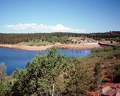
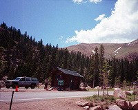
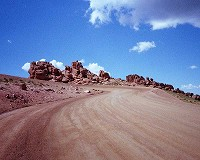
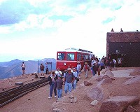
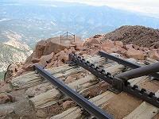
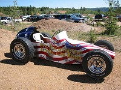

 |
下のほうはそれなりに景色が良く、気持ちよい。 |
| ブレーキチェックポイントがある。降りてきた車のブレーキディスクの温度を、赤外線にて測定し、高温の場合は暫くのクールダウンを命じられる。普通にエンジンブレーキを使用すれば引っかかることは無い。
一般に、アメリカ人はエンジンブレーキを使用しないようだ。下り坂でパカパカブレーキ踏むの止めて欲しい。 |
 |
 |
かなり登ったところ。日本では考えられないほど道幅が広い。7月にヒルクライムサーキットとして使用されるが、確かに路面はフラットであった。 |
| Cog Railwayという電車でも登ることができる。値段は安くは無かったと思うが、満員。 |  |
 |
線路はいきなりがけでおしまいになる。線路にラック歯車が付いているのが特徴。 |
| 独立記念日イベントレースの車両が展示されていた。 |  |
標高4300mの頂上まで、一気に来るまで上がれるのは単純に楽しい。舗装していないが道幅が広く、アメリカは日本と比較的にならないほど舗装率も高いため、皆さん身長にドライブされているので全く危険を感じることは無い。
単なるハイウェイドライブなのですが、思いのほか楽しめた。独立記念日ということもあり、観光客でかなりにぎわう。
特に何があるわけではないが、標高の変化に伴う植物を含めた景色の変化が興味深い。サングラス必要。
Written : 2004.03.20